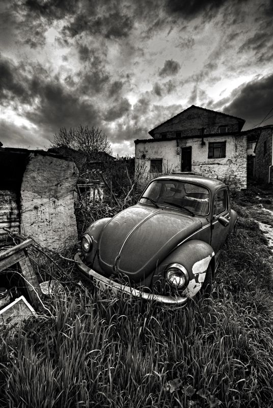

New Born Baby
Wedding
Senior Portrait
View
Beach

Buildings
Alphonso Lisk-Carew founded his business in 1905. His brother Arthur was his assistant. Lisk-Carew advertised as Photographers, importers of photographic materials, stationery, toys, fancy goods, etc., 3 East Brook Lane and 30, corner of Westmoreland and Gloucester Streets Freetown, Sierra Leone.[1] The brothers made photographic trips into the interior of Sierra Leone and also to the Gambia circa 1912. The Lisk-Carew brothers were appointed photographers for the visit of the Duke of Connaught in 1910.[2]